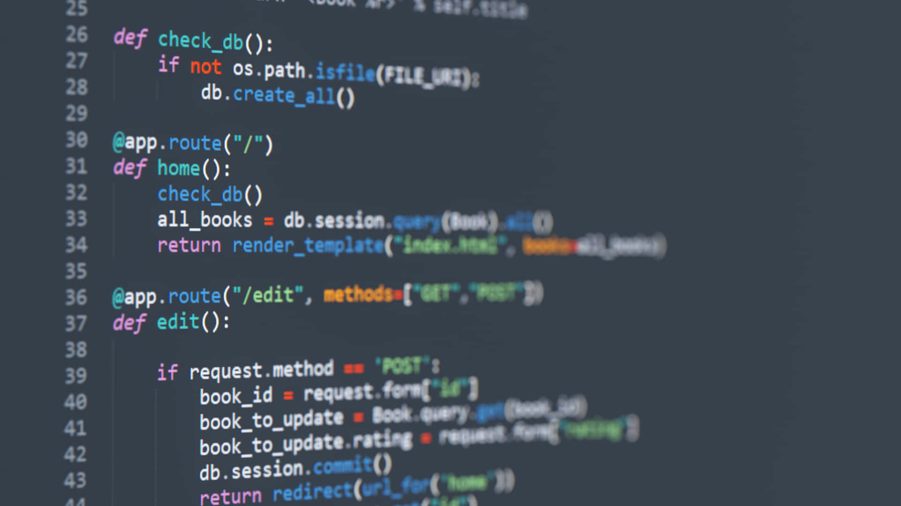

Kodlamaya Başlarken
Programlama dünyası, dışarıdan bakıldığında karmaşık kod satırlarından ibaret gibi görünebilir. Ancak mantığını kavradığınızda, aslında bir problem çözme sanatı olduğunu fark edersiniz. Peki, bu dünyaya nereden giriş yapmalısınız?
Hangi Dili Seçmeli?
İlk dil seçimi hedeflerinize göre değişir:
- Web Geliştirme: HTML, CSS ve JavaScript üçlüsü ile başlamalısınız.
- Veri Bilimi ve Yapay Zeka: Python, sade sözdizimi ve geniş kütüphane desteği ile harika bir başlangıçtır.
- Oyun Geliştirme: C# (Unity) veya C++ (Unreal Engine) tercih edilebilir.
Sürekli Öğrenme
Teknoloji sürekli değişiyor. Bu nedenle "öğrenmeyi öğrenmek", bir yazılımcı için en önemli yetkinliktir. Hata yapmaktan korkmayın; çünkü her hata, sizi çözüme bir adım daha yaklaştırır.
← Ana Sayfaya Dön